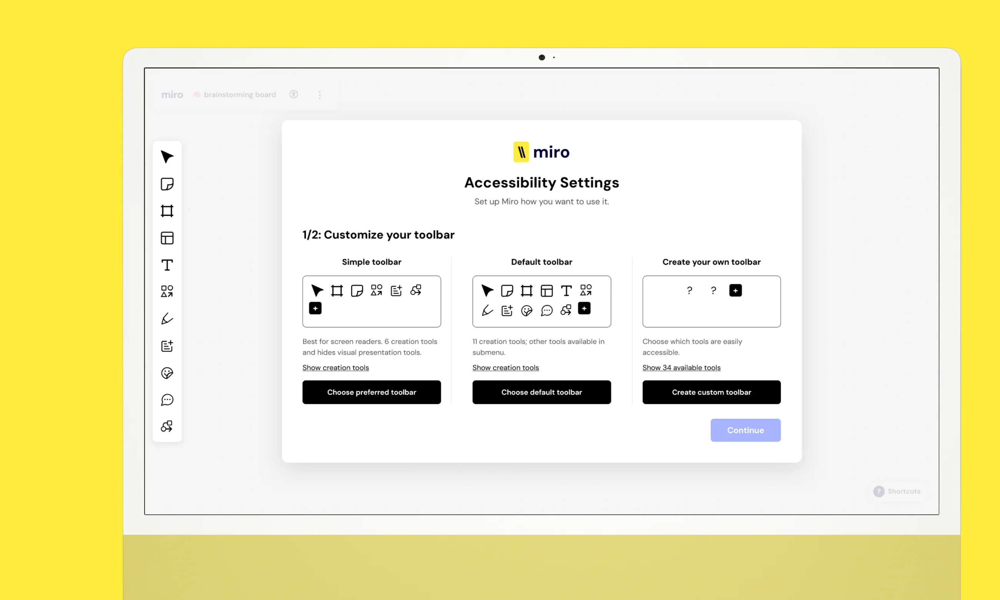

Projects

Adaptive Interfaces
Helping blind users better learn and create with Miro, a visual whiteboarding tool.
Explore project

Transit Fare Map
Making it easier for low-frequency transit riders to purchase tickets; in collaboration with TransLink.
Explore project

Serendipity
A shared listening experience for large student design spaces of the near future.
Explore project

BC Healthcare Hub
An interactive system to help international students apply for provincial health insurance.
Explore project
About me
As a user experience (UX) designer, I enjoy designing physical interactive products which work in tandem with digital systems and experiences. In contemporary UX design, I believe great experiences emerge when tangible interaction seamlessly merges with digital complexity.
Iterative processes and user-centered design methods have driven my ideas and decisions while studying at Simon Fraser University’s School of Interactive Arts and Technology (SIAT) program. In 2024, attending TU/e’s Industrial Design exchange program in The Netherlands introduced me to a unique learning and working environment. Their emphasis on active reflection and personal development helps me bring fresh perspectives to projects today and refinements to my design process tomorrow.
Simon Fraser University, Canada
5th year student